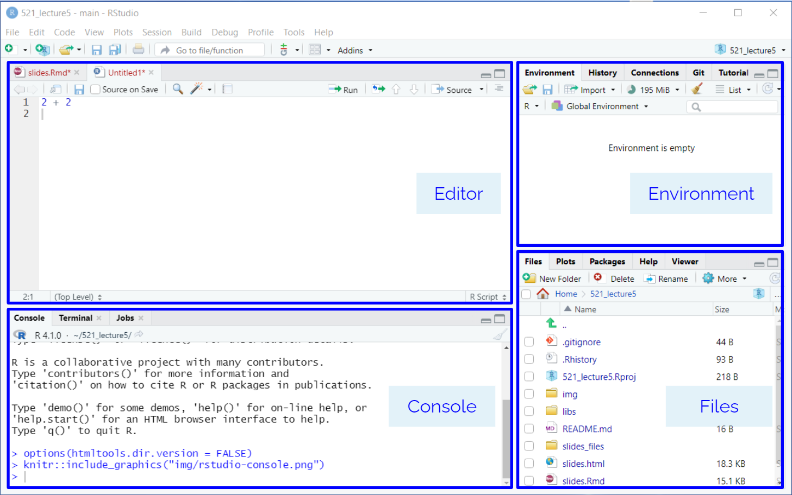
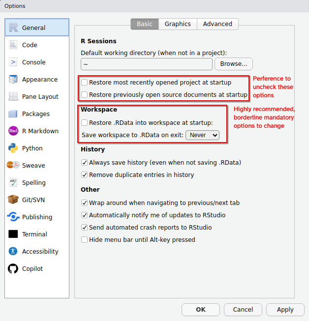
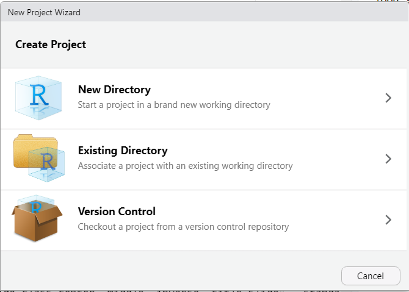
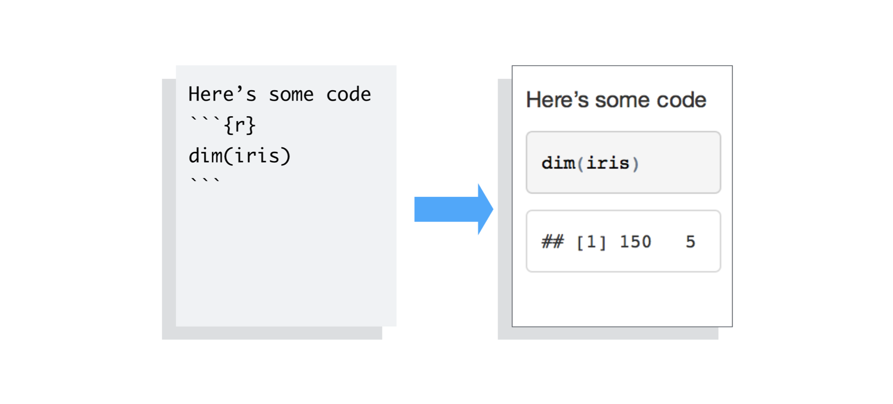
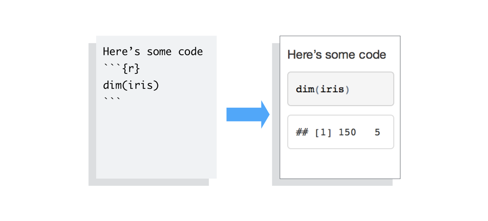
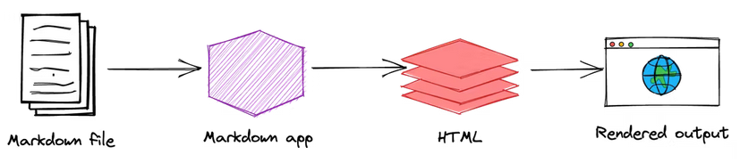
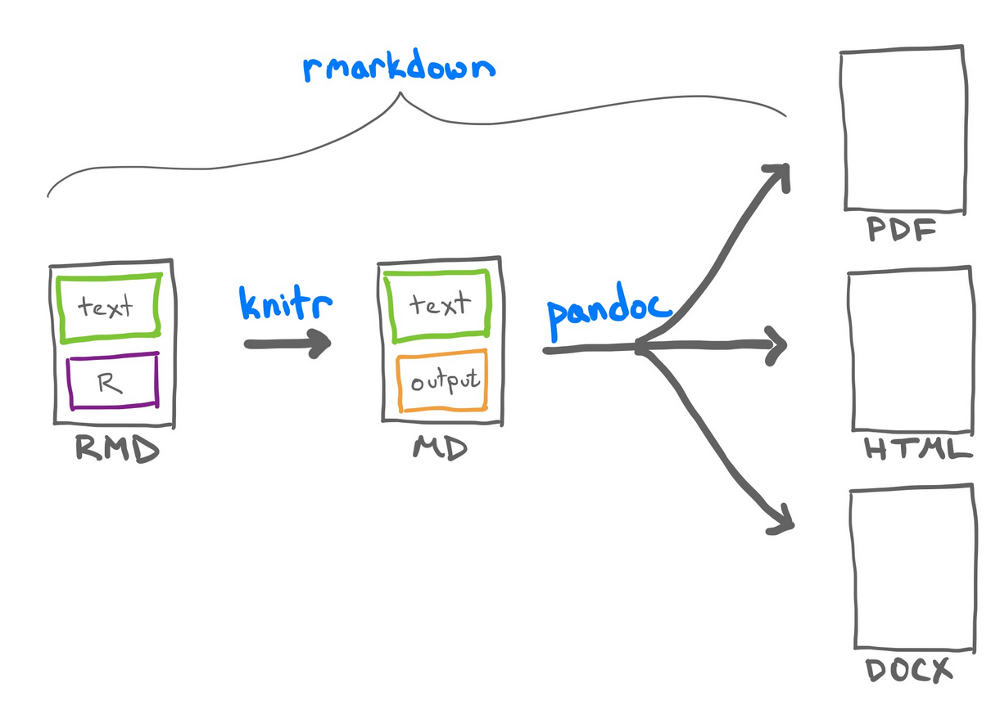
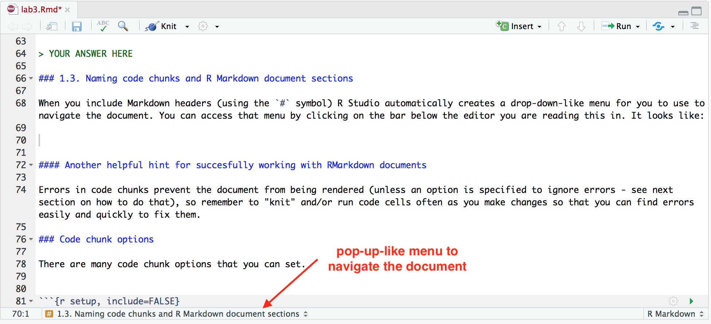
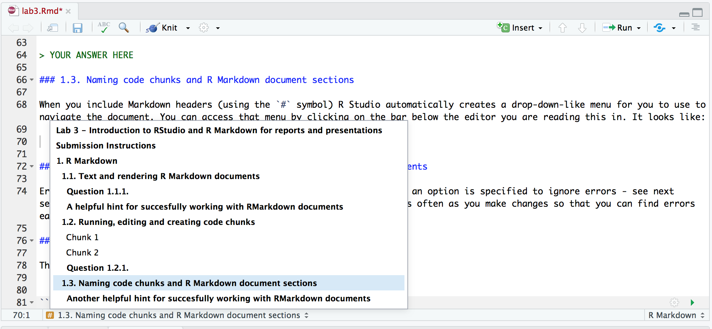

# install.packages("here")
library(here)here() starts at /home/runner/work/DSCI_521_platforms-dsci_book/DSCI_521_platforms-dsci_bookhere to define robust file paths.Platform in focus RStudio IDE
You have been working on a breast cancer prediction report following report and recently discovered an error in one of your calculations, affecting multiple results throughout the report.
Given this situation, how would you approach correcting the report efficiently? Consider how you might use various tools, such as maintaining multiple versions of the document in Microsoft Word or tracking calculations in Excel. Are there other methods or tools you could use to streamline this process? How would you prevent similar errors in the future?
We have already seen RStudio in Lecture 0b. RStudio is an Interactive Development Environment (IDE), just like JupyterLab. This means it comes with some conveniences, such as code completion when pressing TAB, highlighting of syntax errors, and debugging tools.

The interface is also similar to JupyterLab (and many other IDEs) as it has panels for browsing files, reading help documentation, and running code in a console. You are already familiar with the concept of many of these from running JupyterLab, but they are arranged slightly different in RStudio. While you can write both R and Python code in RStudio, we’ll use it mostly for R in MDS.
Please see the Lecture 0b: Recommended RStudio Setup to configure the IDE with safe defaults on launch.

By default, R asks us to save workspace data and load it when we start a new session. In general, we NEVER want to save our workspace (or load a previous one). We can avoid accidentally doing this through turning it off in the RStudio global options in the Tools menu.
A script is a text file that contains multiple commands that you want to be executed all together. In DSCI-511, you have seen how you can use VS Code to create Python scripts in .py files. Here, we will use RStudio to create an R script and save it in a .R file.
To create a new R Script, navigate to New File -> R Script. Write a few lines of code, e.g.
x <- 5
y <- x + 3
print(paste0("y = ", y))You can press the “Source” button to run the entire script (running a script is often referred to as “sourcing” it, hence the name). As you can see, the Console shows you what line it ran in order to source the script (you could also type this out yourself), and then displayed any output from the script in the end. You can run just part of a script by pressing the “Run” button, which runs any highlighted lines (the current line by default, the keyboard shortcut is Ctrl + Enter).
If a plot is generate from the executed code, it will show up in the “Plots” tab in the bottom left panel. You can try it by adding the following line to the script and clicking to run it (it uses a built-in data set called “cars”):
plot(cars)Different from JupyterLab, when you open RStudio you open a .R or .Rmd file the RStudio, the current working directory is not necessarily the project working directory, or the directory of the file you opened.
EVERY SESSION you need to tell RStudio where you are working. Especially if you are loading other files outside of your .R or .Rmd file.
So, where are you when you open RStudio? You can find out one of two ways:
getwd() in the consoleThere are three ways to set your working directory:
Method 1. Use an RStudio project (Best Option): RStudio projects help organize your work and manage your files and settings. More details on RStudio projects are provided below.
Method 2. Set the working directory through the Files pane: Navigate to the desired location in your file structure using the Files pane. Once there, click the cog/More button and select “Set As Working Directory”.
Method 3. Set the working directory via the Session menu: Go to the Session menu, click “Set Working Directory”, and then choose “Choose Directory”. This will open a file browser where you can navigate to and select the desired directory.
Method 4. Set the working directory using the console: Type setwd("PATH") in the console, replacing “PATH” with the path to your desired directory. Use this method with care, as explained in Jenny’s article on workflow vs. script.
The RStudio project method (Method 1) is the only way you can consistently set a working directory that also works in a collaborative workflow.
An RStudio project is essentially a directory containing a special file: *.Rproj, which holds metadata for R about this project. RProjects set the working directory by default to be the root of the project and we recommend using it together with the {here} package, which can easily create paths relative from the root project dir
When you load the {here} package, it will echo the current project root directory. You should always confirm that this is the expected starting location for your project.
# install.packages("here")
library(here)here() starts at /home/runner/work/DSCI_521_platforms-dsci_book/DSCI_521_platforms-dsci_bookIf your iris.csv data is in project_root/files/data/ this will make sure that anyone using your project will get the correct path
here("files", "data", "iris.csv")[1] "/home/runner/work/DSCI_521_platforms-dsci_book/DSCI_521_platforms-dsci_book/files/data/iris.csv"The {here} package finds the project root directory, and allows you to provide a relative path to any of the files from that root project directory. In turn, here::here() will return the absolute path to the specified file or directory.
This method of having the user code always use a relative path, and the function resolving to an absolute path is a way files can be located across different computers, especially when working on a collaborative project.
Another benefit of the here::here() function, is that if your data location does not change, and you move your analysis file into a different folder, you would not need to change your code, because the relative path to the data from the root directory stayed the same.
You have cloned a project folder containing an .Rmd file that loads data using the following code:
cars <- read.csv("data/cars.csv")What could go wrong when you try to render this file, and how could you modify the code to prevent potential issues?
Hint: Think about file paths and project structure. You might consider using a specific function to handle paths.
You can either create an empty RStudio project, or clone an existing GitHub repo, which also allows you to use the RStudio interface to control Git.

Now you can use RStudio as a Git client via the colorful icon in the toolbar of the edit panel. This includes adding parts of a document do the staging area, committing, pushing, pulling, and more. Using terminal Git will still be more reliable, since it is available anywhere Git is installed, but feel free to use the RStudio (or VS Code) interfaces as a complement.
Creating an RStudio Project this way is the same way as running git clone on the remote repository and then selecting “Existing Directory” in the New Project Wizard. The benefit of creating the repository on the remote first, is the same reason we discussed in the Git + GitHub chapters, and saves us the steps of running git init and manually hooking up the remote repositories.
Our journey to understand what is a dynamic document is linked with the literate programming paradigm [2] proposed bu Knuth in 1984 [1].
I believe that the time is ripe for significantly better documentation of programs, and that we can best achieve this by considering programs to be works of literature. Hence, my title: “Literate Programming.” Let us change our traditional attitude to the construction of programs: Instead of imagining that our main task is to instruct a computer what to do, let us concentrate rather on explaining to human beings what we want a computer to do.”…
–Donald Knuth. “Literate Programming (1984)” in Literate Programming. CSLI, 1992, pg. 99.
In the literate programming paradigm, an author has two (equally important) tasks [2]:
Going back to first exercise of this lesson, the best way would be to make sure all the plots and results can be replicated by the code and we can reference the generated artifacts in the report.
However, code, even with documentation strings (i.e., docstrings), may not be easily understandable for people. Adding a narrative to the results will not only improve the capacity to understand the analysis and serve as a detailed documentation if not will allow to easily render again the document after changes in the code.
The idea of accompanying the code with so much detailed text, was not widely adopted for software projects [3] but turn into an amazing tool for data scientists who frequently uses these documents as reports products of their analysis. The rendering of the plots, figures, and tables next to the text in a manuscript allows giving valuable context to the visualizations.
Most of you are probably familiarized with dynamic literate programming documents as Jupyter Notebooks (.ipynb), RMarkdown documents (.Rmd), and Quarto documents (.qmd).
From the two elements that compose the dynamic documents, there are three principal components that are the similar for Jupyter Notebooks, RMarkdown documents, and Quarto documents:
 Example inline code in RMarkdown - https://rmarkdown.rstudio.com/articles_intro.html  Example code chunk in RMarkdown - https://rmarkdown.rstudio.com/articles_intro.html
Example inline code in RMarkdown - https://rmarkdown.rstudio.com/articles_intro.html  Example code chunk in RMarkdown - https://rmarkdown.rstudio.com/articles_intro.html
The overriding design goal for Markdown’s formatting syntax is to make it as readable as possible. The idea is that a Markdown-formatted document should be publishable as-is, as plain text, without looking like it’s been marked up with tags or formatting instructions.
–John Gruber
Jupyter Notebooks, RMarkdown documents, and Quarto documents use markdown to format the text. But, markdown has it’s own identity! We’ve already worked with markdown many times, including the README.md files of most of the projects we have created.
Markdown is a markup language that you can use to add formatting elements to easy to read plain-text text documents [4,5]. Markdown files have their own file extension (.md) that could be easily converted other formats. One example is HTML, that can be rendered as a web page.
Now we can start to understand the power of markdown, and why it is so popular.
Simple formatting syntax: Allows translation of content to HTML (and many other formats) without having to be an expert.
Human readable: Compare markdown and HTML, which one is easier to understand by reading only the code?
Plain-text document: This means that it is open by mostly any editor, making .md files quite reproducible.
The markdown, .md, file is a common file format that can be used by tools such as []pandoc](https://pandoc.org/) to convert to many other types, e.g., pdf, html, epub, docx, ppt, etc.
If your goal is to render the final .html document, keep in mind that you will need an extra step to view the file in a web browser. Also, .html documents can not only be render as web pages, you can create with them blogs, books, articles. We saw this in the Quarto and Git Hub Pages Lesson.
GitHub does will also render the README.md file of every directory in a repository.
 Image extracted from: https://www.markdownguide.org/getting-started/
What are the primary benefits of using Markdown for formatting text documents?
A. It requires complex software to edit
B. It is human-readable and easily converted to HTML
C. It cannot be opened by most editors
D. It is not suitable for web pages
The official markdown specifications is ambiguous which lead to different implementations of markdown [6]. The same markdown syntax can render different outputs depending on the rendering engine. For example, a README.md file can render differently on GitHub than from pandoc. Babelmark III is a website that can detect and return all the different markdown variants, as well as list well known pitfalls. Markdown also has many extensions, and not all extensions will work on all flavors of markdown.
In MDS we handle a limited number of markdown flavours (in order of appearance in DSCI 521):
README.md file in the first page of your repository you will be using this Markdown flavour. It is a (different) extension of the CommonMark Spec also used for Jupyter Notebooks.
Don’t panic! The important take-home message of this is that you should always check the documentation of the technology you are using. Even if for most of the cases could be quite similar, there is not an universal markdown cheatsheet or proceeding that will possible to be used with all of them.
Hints for Preparing Documents
Most documents go through several versions (always more than you expected) before they are finally finished. Accordingly, you should do whatever possible to make the job of changing them easy.
First, when you do the purely mechanical operations of typing, type so subsequent editing will be easy. Start each sentence on a new line. Make lines short, and break lines at natural places, such as after commas and semicolons, rather than randomly. Since most people change documents by rewriting phrases and adding, deleting and rearranging sentences, these precautions simplify any editing you have to do later.
— Brian W. Kernighan, 1974 [9]
Semantic line breaks help your source code files with version control, while also putting breaks that can make it easier to read the source file. When version controlling markdown files, the semantic line breaks make it easier to see where the actual differences and changes to the file were made when running git diff.
How markdown renders a new line break:
<br/> HTML tag at the end of a lineWe provide more examples in the Semantic Line Breaks Chapter
In a R Markdown document any line of text not in a code chunk (like this line of text) will be formatted using Markdown. Similar to JupyterLab, you can also use HTML and LaTeX here to do more advanced formatting. Unlike JupyterLab, you do not get to see these Markdown sections rendered on their own. To see this text rendered, you need to render the whole document. You can do that clicking the “Knit” or “Preview” button on the top. The difference between these two is that “Preview” creates a HTML version of your document as it looks right now, whereas “Knit” first restarts the R session and runs through the entire document from the beginning to make sure it will work when you send it to someone else.
Given that you need to render the entire document to see your Markdown and LaTeX rendered, it is important to “knit” often as you make changes. If you make an error in a LaTeX equation for example, it will stop the knitting/rendering process and you will not get to see the rendered document. So by knitting/rendering often you will know where the last changes you made are and then will be able to easily identify and fix your errors.
.Rmd) -> Markdown (.md)Analogous to the Jupyter Notebook cells, the R Markdown code chunks after being render will be embedded in your final report.
When you run render, R Markdown feeds the .Rmd file to knitr, which executes all of the code chunks and creates a new markdown (.md) document containing the code and its outputs.
The markdown file generated by knitr is then processed by pandoc which is responsible for creating the finished format.
 Rmarkdown documents are created from text and R code
What is the primary advantage of using an .Rmd file over a .md file to create the final HTML document?
A. .Rmd files do not support code chunks.
B. .Rmd files allow for the inclusion of executable code chunks, producing dynamic documents.
C. .md files are easier to edit.
D. There is no difference between .Rmd and .md files in terms of functionality.
R Markdown is a “flavor” of Markdown that allows you to run R code in addition to supporting all the Markdown syntax that you have already learned.
R Markdown documents (.Rmd) work similarly to Jupyter notebooks in the sense that you can interleave writing code, formatted narrative text, and view output all in the same document. These are both examples of what it called “literate programming” where the goal is to mix code and paragraph text seamlessly.
R Notebooks are a little different. Let’s see an example of this by creating a new R Notebook via File -> New -> R Notebook. As you can see, there is a default template for Notebooks, which include useful info on how to use them. We can see the keyboard shortcuts for running and inserting cells, and when we execute the plot code the plot shows up inside the notebook rather than in the side panel as when we ran the same line from within the script script.
The main difference in an R Markdown document and an R Notebook document, is that R Markdown will “knit” the document in a new R session from top to bottom every time. The R Notebook, will convert whatever you have directly into HTML as-is. It does not execute any code on “Preview”.
You can tell the difference by either looking at the YAML header of the document, or in RStudio, you will see a different button (Knit vs Preview).
Just like Jupyter notebooks, R Markdown has code cells, although they’re more commonly referred to as code “chunks” or “blocks”. These are based off fenced Markdown code blocks and always start and end with 3 backticks (```), just like in Markdown. Unique to R Markdown is that the leading three backticks are followed by curly braces containing the language engine you want to run, which for r looks like this {r}. Additional metadata can be included, for example a name to reference the code chunk:
```{r my-first-code-chunk}
x <- 5
x
```[1] 5There are other language engines that can be used in RMarkdown, you can learn more about that here.
R Markdown documents can also execute Python code, you will need to have the R {reticulate} package installed, and then point your R installation to the Python version you need.
You can learn more about {reticulate}: https://rstudio.github.io/reticulate/
All code cells are run when you knit/render the entire document (like pressing “Run all” in JupyterLab). By default, the code in the chunk and the code output will be included in your rendered document. You can also run the code by clicking the green play button on the right-hand side of the code chunk.
When you include Markdown headers (using the # symbol) R Studio automatically creates a pop-up-like menu for you to use to navigate the document, which you can access by clicking the bar below this editor panel. It looks like:


By clicking on any of the headings in the pop-up-like menu, RStudio will navigate you to that section of the R Markdown document. Try clicking on one to see how it works.
In addition to Markdown headings, RStudio also keeps track of code chunks in that menu. By default RStudio names the chunks by their position (e.g. Chunk 1, Chunk 2, etc). But in reality those names are not that useful and it is more helpful to give code chunks meaningful names. For example, in the code chunk below where we use a for loop to sum the numbers from 1 to 10, we name the chunk for loop sum.
```{r for loop sum}
# initialize sum to 0
loop_sum <- 0
# loop of a sequence from 1 to 10 and calculate the sum
for (i in seq(1:10)){
loop_sum <- loop_sum + i
}
print(loop_sum)
```[1] 55Convert Markdown to R Markdown and Generate a Plot
Objective: Convert a given Markdown file into an R Markdown document. Ensure that the document includes at least one plot generated from a built-in R dataset. Submit the .Rmd file and the rendered HTML output. Additionally, discuss the advantages of using .Rmd over .md for generating dynamic documents.
Instructions:
example.md).example.Rmd).mtcars, iris) to generate a plot..Rmd file to HTML format..Rmd over .md for generating dynamic documents.example.md).example.Rmd).example.html).Questions:
There are many code chunk options that you can set. These options let you customize chunk behavior, including whether a chunk is evaluated, whether to include the output in the rendered document, etc. A short list of code chunk options is shown below, but you can find an extensive list starting on the second page of this document.

You can set the chunk options at either a global level (once set they will be applied to all code chunks in the .Rmd file) or locally for a specific chunk (these will override the global chunk options if they are contradictory).
Global options are usually set in one chunk at the top of the document and looks like this:
```{r setup, include=FALSE}
knitr::opts_chunk$set(echo = FALSE)
```Global chunk options are set by adding them as arguments to knitr::opts_chunk$set(...); replace the ... with comma separated options. For example, if you set the global chunk option to echo = FALSE, it will hide the code chunks and only shows the output. This is something that can be useful for non-technical reports.
Local chunk options are set by adding the options in the curly braces of a code chunk after the language engine and code chunk name. For example, to not display warnings in a single code chunk we would use the warning = FALSE code chunk as follows:
# some R code that throws a warning
cor( c( 1 , 1 ), c( 2 , 3 ) )[1] NAR Markdown and knitr also support the Quarto #| comment option. At the beginning of your code chunk, you can supply your chunk options with a comment. This allows you to put many options (and long option text) on separate lines. This plays well with version control and tries to follow semantic line break rules.
For example, you can re-write the correlation no warning chunk as
```{r, correlation no warning 2}
#| warning: false
cor( c( 1 , 1 ), c( 2 , 3 ) )
```[1] NAThe #| chunk option notation takes in a different format than the inline option. E.g., we use YAML true, and false values, instead of R’s TRUE, and FALSE. We also use : to set key-value pairs, instead of =.
Also for the correlation no warning examples above we needed to change the name of the second chunk because documents cannot have chunks with the same name.
See this page for more information about chunk options: https://yihui.org/knitr/options
Adding 3 to 4 gives `r 4 + 3`.
The value of `x` is currently `r x`.$\alpha = 5$ for inline latex and $$\alpha = 5$$ for a math block.citation() into the console, and copying the BibTex citation into a new document that we call rstudio-demo.bib and adding an identifier string (a key) before the first comma, e.g. r-lang.bibliography: rstudio-demo.bib, then cite it somewhere in the text by adding [@r-lang]. The bibliography will be appended to the document, so it is advisable to add a heading saying # References at the very end.When working with R Markdown (and code in general) be careful that you don’t copy stylized quotation marks because these will not work. For example, this will throw an error:
a = “This string”It should look like this instead:
a = "This string"We have seen how to use the output formats html_document and pdf_document, but as noted in lab3 during the lab, there are many more. A commonly used one is github_document, which both saves a .md markdown file and creates a temporary .html files for preview of how it will look on GitHub, which is stored in a temporary folder and later deleted. This format does not have as many options as HTML, and you can use it like this:
output: github_documentAnother way of creating a a github_document is to go to New -> R Markdown -> From Template -> GitHub Document. As you can see there are other useful templates here. We will see how to create a presentation soon.
A word document can be created with this YAML header:
output: word_documentWe can modify the style of a word document by opening one of our previously exported word files (it must have been created with R Studio / Pandoc), changing the styling options as shown here, saving this under a new name, and then using it as a template:
output:
word_document:
reference_docx: "our-style-doc.docx"There are more details in this article, including how to create your own custom template, for example for a CV.
Creating an RStudio Project and Generating an R Markdown Report
Objective: Create an RStudio project, write a script to analyze a dataset of your choice, and generate a report in R Markdown. The report should include a narrative, code chunks, and visualizations. Submit the RStudio project folder along with the .Rmd file and the rendered HTML output. Additionally, include a section comparing R Notebooks and .Rmd documents, highlighting their similarities and differences.
Instructions:
Data_Analysis_Project).analysis.R) to perform the data analysis. The script should include data loading, cleaning, analysis, and visualization.report.Rmd) within the project..Rmd file to HTML format.analysis.R).report.Rmd).report.html).Questions: